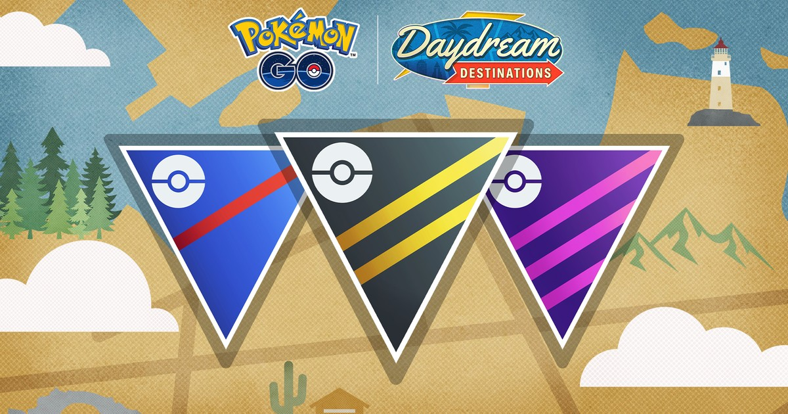

Pokémon GO's next season is Daydream Destinations — two new Megas, GO Tour: Alola, and a March finish line
Pokémon GO's next season starts December 1: Daydream Destinations runs through March 1 with two new Mega Evolutions, the return of Gigantamax Inteleon and Toxtricity, and Pokémon GO Tour: Alola in February — in person in Los Angeles and Kaohsiung, then worldwide.

Disclosure: this post contains affiliate links. I earn a commission on qualifying purchases.
Pokémon GO's next season has a name, a start date, and a headline act. Daydream Destinations begins December 1, 2026, and runs through March 1, 2027, developer Scopely Explore revealed on November 24 — closing out the Twilight Trails season and carrying the game through the holidays and into next year's Pokémon GO Tour.
The season's biggest news is in the raids. Mega Drampa and Mega Froslass are both making their Pokémon GO debuts in Daydream Destinations, with two Super Mega Raid Days on the calendar in January — one on January 9 and one on January 30. That is the first time either Mega has been available in the game, and both figure to matter immediately: Mega Drampa arrives as the first Mega Level 4 Normal-type raid attacker, while Mega Froslass looks like a top-tier Ice-type option once it has its Mega Level 4 move unlocked.
GO Tour heads back to Alola
The season builds toward Pokémon GO Tour: Alola, the year's biggest event. The in-person legs take place February 19–21, 2027, in Los Angeles and Kaohsiung, Taiwan, followed by the global version on February 27–28. Scopely Explore has not said yet which Pokémon will headline the Tour — rumors about Ultra Necrozma and a Shiny Poipole have been circulating, but the developer has confirmed neither — so the details, wild spawns, and raid lineups are still to come in the weeks ahead.
The season's key art is already doing some teasing of its own. The promo image shows Gen 7's Wishiwashi and Pyukumuku, neither of which is in the game yet, alongside holiday-costumed Pokémon — a strong hint that at least one of the Alola pair debuts before the season is out.
Max Battles and Community Days
Max Battles get a big pair of returning headliners: Gigantamax Inteleon and Gigantamax Toxtricity are back for the season, both still the best Max attackers of their types — Water and Electric, respectively. Three more Pokémon join Max Battles for the first time — Dynamax Alolan Sandshrew, Dynamax Slowpoke, and Dynamax Corphish — filling out the Pokédex more than the meta.
The Community Day calendar is set, too. The season opens with the two-day year-end Community Day on December 12–13, the catch-up weekend that lets players grab Shiny versions and exclusive moves they missed during the year. January brings a Community Day Classic on January 2 and a regular Community Day on January 16, with another on February 6.
A GO Pass change worth knowing about
One quieter change could be the most argued-over. For Daydream Destinations, the GO Pass Rank 1 bonus is now increased XP whenever you level up a friendship, plus a 2x friendship bonus for damage in raids. Last season, that slot gave extra Candy and a guaranteed Candy XL on trades — a bonus that pushed a lot of players to trade daily. The XP boost should add up fast for active players, but the raid-damage bonus is the open question: it is hard to see a friendship-based damage bump turning a raid you were already going to lose. Friendship Friday still offers two guaranteed Candy XLs per trade, so the trading incentive is not gone entirely — it just moved.
GO Battle League resets with the season on December 1 at 1:00 p.m. PST, with end-of-season rewards on the Battle screen and ranks starting over, per the official announcement.
Three months, two new Megas, a Tour in Alola, and a year-end Community Day to open it. Daydream Destinations starts in a week.
Sources: Pokemon GO's Next Season Details: Daydream Destinations Revealed (GameRant) · Pokémon Go's next Season, Daydream Destinations, sees you battling Mega Drampa and Froslass in Raids (Pocket Gamer) · Pokémon Officially Brings Back a Legendary Alongside 2 New Mega Evolutions (Collider) · GO Battle League: Daydream Destinations Update (Pokémon GO)
Gear up: Razer — mice, keyboards, headsets and laptops.